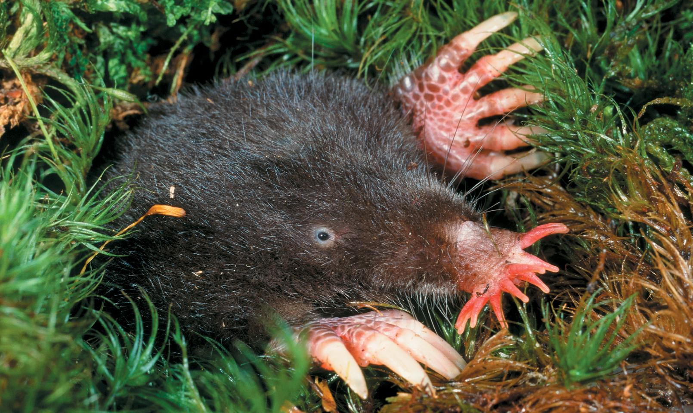

| 34 | Neurons, Sense Organs, and Nervous Systems |
|
KEY CONCEPTS
34.1Nervous Systems Are Composed of Neurons and Glial Cells 34.2Neurons Generate Electric Signals by Controlling Ion Distributions 34.3Neurons Communicate with Other Cells at Synapses 34.4Sensory Processes Provide Information on an Animal’s External Environment and Internal Status 34.5Neurons Are Organized into Nervous Systems |

The star-nosed mole has tiny eyes but large, specialized nose tentacles—correlated with the fact that it hunts in darkness for tiny prey that it locates by touch.
|
You might imagine that this strange-looking mammal exists only in some remote forest in one of Earth’s most inaccessible places. Actually its home is in the eastern United States and Canada. If you live in that part of the world and like to walk in the wild outdoors, you have probably walked right by one. This mammal lives mostly underground, however, explaining why most people have never seen one. It’s called the star-nosed mole (Condylura cristata) because its nose bears two symmetrical arrays of tentacles that surround the nostrils in a starlike pattern.
Star-nosed moles live in burrows in wet, marshy soils where tiny invertebrates are abundant. The moles are specialized to eat these minute animals. They eat lots of tiny worms and insects. Almost as amazing as their tentacled nose is the fact that the moles forage underwater to a great extent, as well as in their burrows. Most of what biologists know of them comes from studies of burrow foraging.
Why did their strange star-shaped nose evolve? Biologists have deduced that if star-nosed moles eat tiny animals, they must find and eat great numbers of them each day. The current hypothesis regarding the evolution of this strange nose is that it is an adaptation for rapid foraging on tiny prey in darkness.
The star-shaped nose is clearly a sensory organ. All you need to do to be convinced of that is to watch a mole for a few minutes. The moles constantly explore their environment with their tentacles. People at first hypothesized that the moles detect tastes or odors with their tentacles. Researchers have since learned that the sensory receptors in the tentacles are touch receptors.
The nose is no ordinary touch organ, however. The array of tentacles is about 1 centimeter in diameter—not very large. Yet there are about 25,000 tiny touch receptors (called mechanoreceptors) in the skin of the tentacles. And about 100,000 nerve processes (axons) travel from the tentacles to the mole’s brain, carrying signals from the receptors. The star-nosed mole is believed to have the highest resolution touch perception found in a mammal. The brain uses this information to perceive potential food items.
The moles are active explorers. As they move from place to place in darkness, they investigate each potential food item in an intense flurry of moving tentacles, providing touch sensations to their brain. With this flow of information, they typically decide in less than a second whether to eat, allowing them to move on promptly in their ceaseless quest to find enough tiny animals to meet their daily food need.
How might the star-nosed mole’s brain be specialized to process information from its nose?